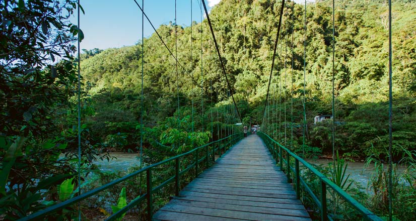
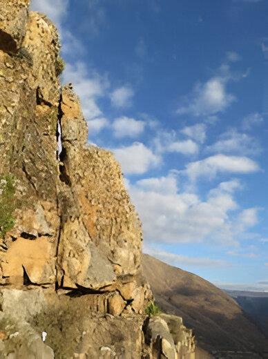
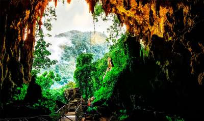

Puntos de interes

Parque Nacional de Tingo Maria
El Parque Nacional de Tingo María, un refugio de biodiversidad, ofrece impresionantes paisajes selváticos.
Ver Más

La Leyenda de Pillco Mozo
Una montaña cargada de mitos y leyendas que embellece el paisaje de Huánuco.
Ver Más

La Cueva de las Lechuzas
Un misterioso refugio natural que alberga cientos de aves nocturnas en el corazón de la selva.
Ver Más